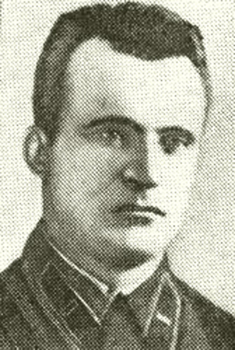

Родился 12 сентября 1906 года в деревне Моисеевичи ныне Осиповичиского района Могилевской области . В Красной Армии с 1928 года. Участник советско-финской войны (1939-1940 гг.), в Великой Отечественной — с первого дня.
В ночь на 10 сентября 1943 года подполковник С.Н.Каданчик участвовал в морском десанте в Цемесской бухте (Новороссийская операция). Катер, на котором находился командир полка, был подбит огнем противника и затонул. Каданчика с частью бойцов спас экипаж другого катера, возвращавшегося после высадки десантников в Геленджик. На позицию, удерживаемую полком, смог попасть только спустя полдня. Тяжелые бои длились неделю — 16 сентября 1943 года порт и г. Новороссийск были полностью освобождены.
Отважный командир полка пал смертью храбрых на наблюдательном пункте 15 сентября 1943 года. Был похоронен в городе Геленджике Краснодарского края. Перезахоронен в братскую могилу на площади Героев в Центральном округе города-героя Новороссийска. Каданчику Сергею Николаевичу посмертно присвоено звание Героя Советского Союза.
Именем Героя названы улицы в Новороссийске и в Осиповичах. На здании школы в родной белорусской деревне Моисеевичи установлена мемориальная доска.
Сергей Николаевич Каданчик

На главную